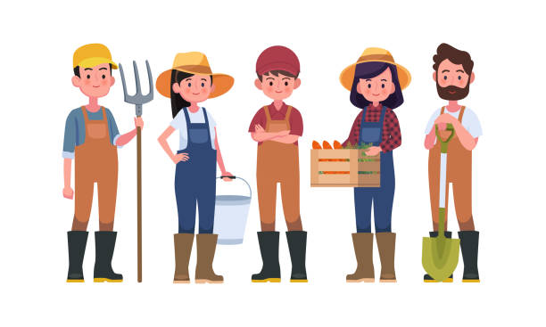
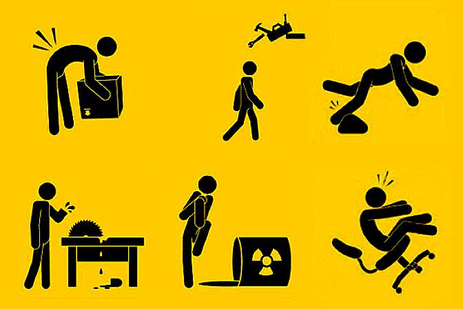
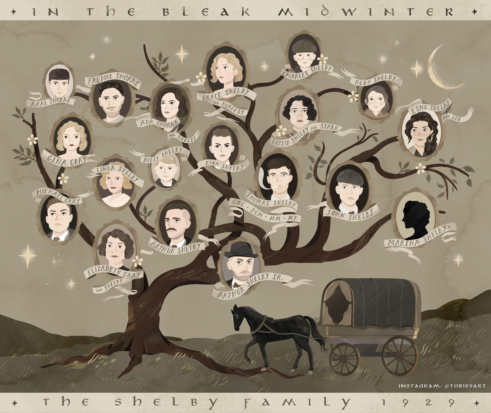

Benefício destinado à proteção da gestação e da maternidade.
Benefício destinado à complementação de renda de alguns segurados do RGPS em função de encargos familiares.
Benefício que cobre o risco de morte do segurado do RGPS.
Benefícios do RGPS que se destinam a cobrir o risco de incapacidade para o trabalho.


Conhecendo as espécies de segurados do regime geral de previdência social